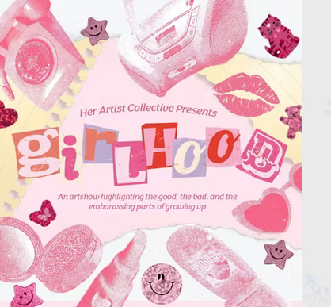

Girlhood 2.0
Join us for the gallery opening of Girlhood 2.0! Festuring work form 20+ Chicago Artists! Join us in our celebration of Girlhood ft live artist talks, yummy drinks, a photobooth and MORE!
Hosted by Her Artist Collective
RSVP for address: https://partiful.com/e/aPLMmo3NwS7DDPIWXCqx